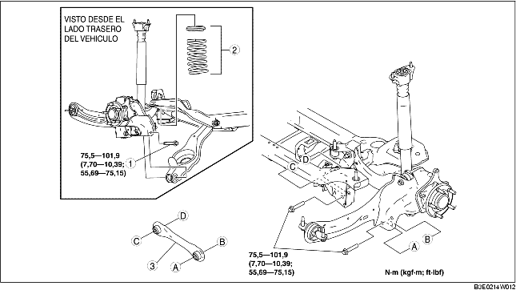

1. Quitar el sensor trasero del regulador automático de los faros. (Véase REMOCION/INSTALACION SENSOR REGULADOR AUTOMATICO FAROS).
2. Quitar el estabilizador trasero. (Véase REMOCION/INSTALACION ESTABILIZADOR TRASERO).
3. Quitar según el orden indicado en la tabla.
4. Instalar en el orden contrario al de la remoción.
5. Controlar la alineación de las ruedas y ajustarla si necesario.
(Véase ALINEACION RUEDAS TRASERAS).

.
|
1
|
Perno exterior brazo inferior trasero
|
|
2
|
Conjunto muelle helicoidal trasero
|
|
3
|
Brazo lateral trasero
|
1. Sostener el brazo inferior trasero con un gato.
2. Aflojar los pernos interiores del brazo inferior trasero.
3. Quitar el perno exterior del brazo inferior trasero.
1. Instalar el brazo lateral trasero de manera que la costilla esté orientada hacia la parte delantera del vehículo.